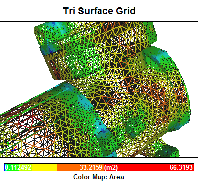

Reynolds-Averaged Navier-Stokes Equations
Most people are intuitively aware that the fluid flow of both gases and liquids is inherently transient (unsteady) by nature. As an example, just ponder the movement of leaves on a tree in a breeze or the flow of water from a tap. Less intuitive is that even a relatively steady flow in a wind tunnel has transient velocities that vary at scales and frequencies that our human senses are unable to discern. Such variations are known as turbulence. The treatment of turbulence in the Reynolds-Averaged Navier-Stokes (RANS) equations lies at the heart of most practical Computational Fluid Dynamics (CFD) approaches.
 Cyclone Flow Simulation: Solving the RANS equations
Cyclone Flow Simulation: Solving the RANS equations
Affordable RANS Analysis Available Now
Are you ready for a 30-day free trial of Caedium Professional?

Navier-Stokes Equations
The Navier-Stokes equations accurately describe fluid flow for a remarkably large class of problems, by assuming that fluid behaves as a continuum rather than as discrete particles. However, inherent in these equations is the representation of velocity scales and variations that make solving them nearly impossible on present-day computers except for the simplest of flows using Direct Numerical Simulation (DNS). The Navier-Stokes equations are also inherently unsteady (varying with time), which means averaging multiple solutions at a series of time steps is required to produce engineering quantities such as lift and drag from a pressure solution (or field).
Reynolds-Averaged Navier-Stokes Equations
Decomposing the Navier-Stokes equations into the RANS equations makes it possible to simulate practical engineering flows, such as the airflow over an airplane. The assumption (known as the Reynolds decomposition) behind the RANS equations is that the time-dependent turbulent (chaotic) velocity fluctuations can be separated from the mean flow velocity. This transform then introduces a set of unknowns called the Reynolds stresses, which are functions of the velocity fluctuations, and which require a turbulence model (e.g., the two-equation k-epsilon model) to produce a closed system of solvable equations. The reduced computational requirements for the RANS equations, while still significant, are orders of magnitude less than that required for the original Navier-Stokes equations. Another advantage of using the RANS equations for steady fluid flow simulation is that the mean flow velocity is calculated as a direct result without the need to average the instantaneous velocity over a series of time steps.
It is a relatively straightforward process to produce an unsteady variant of the RANS equations (sometimes referred to as URANS) for transient flows, while still solving for the mean flow velocity separately from the turbulent velocity fluctuations.
Computational Fluid Dynamics
Combining the RANS equations with assumptions that enforce the conservation of mass and energy produces the mainstream approach used within CFD to simulate a wide variety of practical fluid flows. CFD breaks down a fluid domain into discrete cells (a mesh) and then solves the RANS and conservation laws in each cell. The accuracy of a typical CFD simulation is primarily determined by the mesh resolution (usually the higher the better, but at the cost of more computing resources and slower turnaround times) and the turbulence model.
Surface Mesh Elements
Turbulence Model Tuning
The requirement of a turbulence model in the RANS equations is an inherent weakness. Turbulence models are typically tuned empirically for specific cases, such as attached flow on an airfoil, or the massively detached flow behind a bluff body, or the high swirl encountered in a cyclone. These problems have driven the development of the Large Eddy Simulation (LES) method as an alternative to the RANS equations, resulting in a massive increase in the required computing resources - but that's a whole other story...
Feedback
Questions? Ideas? Problems?